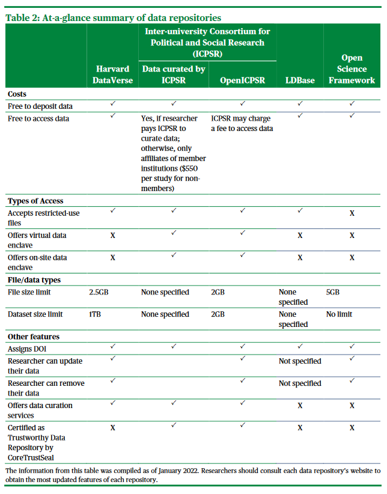

Data Sharing
Overview
Data sharing has become one of the most discussed areas around data management. With the growing number of funders requesting a data sharing plan (i.e. NIH), more people want to know how and why they should share their study data. In a 2019 paper, Pasek and Mayer found that data curation and re-use was cited as the area most needing improvement by graduate students across two universities. And in a way data sharing is a great jumping off point for many people to think about data management. With an end goal in mind, researchers can start to think about what structures they need to put in place to curate data that will be acceptable for data sharing.
What is Data Sharing
While data sharing may sometimes encompass things such as sharing correlation matrices, summary tables, or study results, that is not what this module is about. This module is about sharing raw, item and case level, primary data collected as part of a research study. It can also include extant data collected and added to data that you collect. Beyond that overview, what types of data you share, how you share, and where you share, may depend more on things like your funder, your budget, your project/participants, and your field. However, this module will provide many recommendations for what and how to share your data that will lead to the most benefits for you, your project, and your field.
Principles
FAIR
As a reminder of what we covered in the Data Management Module, in 2016 the FAIR Principles were published in Scientific Data, outlining 4 guiding principles for scientific data management and stewardship. These principles should be referred to when choosing when, where and how to share your research data.
F: Findable
All data should be findable through a persistent identifier and have good data documentation, aka metadata. As we move towards automation in our work and life, the need for machine-readable metadata becomes more prevalent for automatic discovery of data.
A: Accessible
You data is accessible if humans can access your data. This can mean your data is available in a repository or through a request system.
I: Interoperable
Use standardized vocabularies as well as formats. Both humans and machines should be able to read and interpret your data. Software licenses should not pose a barrier to usage. Data should be available in open formats that can be accessed by any software such as .csv, .txt, .dat, etc. Furthermore, thorough data documentation should accompany data.
R: Reusable
Your metadata should provide information on the broad context of your project as well as your data collection to allow for accurate use of your data. You should also have clear licensing for data use.
Additional resources:
📑 Within & Between podcast
📑 Practical Solutions for Sharing Data and Materials from Psychological Research
Planning for Data Sharing
While Data Sharing may often happen at the end of a project, planning for data sharing should happen at the beginning. For many funders, you’ll be required to write a brief overview of your data sharing plan in your data management plan (DMP) as part of you grant proposal, and will also be allowed to submit DMP associated costs in your grant application budget requests. DMPs are often a supplement/appendix to your grant application and restricted to anywhere from 1-2 pages (NIH, NIJ, and NSF) to a 5 page maximum (IES). For most funders these DMPs are not part of the scoring process, but they are reviewed by a panel or program officer. Some funders may provide feedback and/or ask for revisions if they believe your plan and/or your budget/associated costs are not adequate.
What to include in a DMP varies some across funding agencies. While you should check each funding agency’s site for their specific DMP requirements, this comparison table provides an overview of 11 common categories covered in a data management plan and whether four large funding agencies ask applicants to address these categories in their data management plans, as well as any additional guidance they provide for each category.
Categories to Include in a Data Management Plan and Guidance Provided by Funder
| Content Category | IES - Data Management Plan | NIH - Data Management and Sharing Plan | NIJ - Data Archiving Plan | NSF - Data Management Plan |
|---|---|---|---|---|
| Roles and Responsibilities | YES | YES | YES | YES |
|
What are staff roles in mgmt and long-term preservation of data? Who ensures accessibility, reliability, and quality of data? Is there a plan if a core project member leaves the project or institution? |
Staff responsible for data creation and management should be identified and their duties described. Identify any hardware/software required for managing data. |
|||
| Type of Data to be Shared | YES | YES | YES | YES |
|
How is data captured (surveys, assessments, observations)? Will data be item-level and summary scores? Will you share raw datasets and clean Datasets? What are the expected # of files? Expected # of participants in files? |
Full item/case level dataset, not summary statistics or tables are expected. This includes primary data collected through the grant, as well as data created by linking to extant data sources. Share, at a minimum, the data underlying any peer-reviewed publication, this includes “final analytic measures as well as the source measures used to construct them”. However, researchers are encouraged to share any data that will “inform the field more broadly”. Providing access to final cleaned data is required. Including raw data and derived variables is optional. |
All primary data collected through the grant regardless of whether the data are used to support scholarly publications. Data should be of sufficient quality to validate and replicate research findings. |
All cleaned data collected under the grant award. Data should include all variables used to produce analysis, tables, and descriptive information provided in the final report (ex: computed, derived, and weight variables - if applicable). |
Share primary data collected during the course of the grant. |
| Format of Data | YES | YES | YES | YES |
|
Electronic? Nonproprietary software format (ex: csv)? More than one format (.sav and .csv)? Any related tools needed to manipulate shared data? |
Must be an electronic format. Advised to provide data in multiple formats (one being a non-proprietary format). Identify any hardware/software required for sharing data. |
Datasets should be provided in formats consistent with those used in the community that the repository serves. Preferred non-proprietary formats. |
For Quantitative: SPSS preferred, Stata and SAS are acceptable. Embedded variable and value labels, and missing values assigned. For Qualitative: txt, rtf, Microsoft Word or PDF, Excel, databases |
|
| Documentation | YES | YES | YES | YES |
|
What metadata will you create (data dictionaries, codebooks)? Consider project level, dataset level and variable level documentation. What format will it be in (xml, csv, pdf)? What other documentation do you plan to include when sharing data (code, data collection instruments, protocols)? |
Provide sufficient documentation to support responsible use by other researchers. “Information can be embedded directly into the file or can be included with it as a separate file (e.g., a ReadMe.txt file, a .pdf, etc.).” “Documentation should include a summary of the purpose of the data collection, methodology and procedures used to collect the data, timing of the data collection, as well as details of the data codes, definition of variables, variable field locations, and frequencies.” |
Examples include: Methodology and procedures used to collect the data, Data labels, Definitions of variables, Any other information necessary to reproduce and understand the data |
Documentation should include: IRB approved protocol, Final project report/journal article, IRB approved consent (if applicable), Data use agreements (if applicable, Description of file formats, data anomalies, frequently used terms/acronyms, instructions for merging files, documentation on decisions, guidance for using weights (if applicable), citations, contact information, codebooks if variable and value labels are not embedded in the data files, syntax files containing statistical programming code as well as data manipulation code. PDF format preferred: Word, RTF and ASCII accepted |
|
| Standards | YES | YES | YES | YES |
| Any data/documentation standards being used (ex: DDI, International standard)? | “There are emerging metadata standards in many fields, but currently there is not a set of standards in education research.” | “While many scientific fields have developed and adopted common data standards, others have not. In such cases, the Plan may indicate that no consensus data standards exist for the scientific data and metadata to be generated, preserved, and shared.” | “DMPs submitted to EHR should be appropriate to the data being generated and reflect the procedures, standards and best practices developed by the communities of practice in the area of research being proposed.” | |
| Method of Data Sharing | YES | YES | YES | YES |
|
How will you share data (institutional repository, data archive, PI website)? Will data be restricted and is a data enclave required? Is a data agreement required? |
Highly encouraged to deposit data in publicly accessible repositories. However, other methods may be used including the PI taking responsibilitiy for data sharing or some combination of repository and PI data sharing. Datasets should be discoverable and citable (ex: metadata and DOI). |
Strongly encourage the use of established repositories to the extent possible, specifically, domain-specific repositories where possible. Data should be findable and identifiable (ex: via a persistent unique identifier or other standard indexing tools). While data kept by the researcher or institution, provided on request is not preferred, NIH recognizes and respects that many communities (ex: AI/AN communities) may want to manage, preserve and share their own data. |
In most cases, the NIJ requires grantees to deposit their data in the National Archive of Criminal Justice Data (NACJD), which is hosted by ICPSR. If this is not the appropriate repository for the datasets, the data archiving plan should include submission of study level information and link to data location. |
“If data or products are to be preserved by a third party, please refer to their preservation plans if available.” |
| Circumstances preventing sharing | YES | YES | YES | YES |
|
Do you have any data covered by FERPA/HIPAA that doesn’t allow data sharing? Do you work with any partners that do not allow you to share data (ex: School districts, Tribal regulations)? Are you working with proprietary data? |
“Specify appropriate restrictions on access to and usage of the data to ensure protection of human subjects while not unduly restricting access to the data.” If a DMP states data cannot be shared, researchers must provide a compelling rationale. |
Will there be any restrictions on data collected from human subjects? “Any restrictions imposed by federal, Tribal, or state laws, regulations, or policies, or existing or anticipated agreements.” Any limitations should be communicated to both the data repository as well as communicated in the Data Management and Sharing Plan for review. |
“Unless otherwise specified in writing by the NIJ grant manager, as authorized by the appropriate NIJ authority, data submission is required for all research, development, and evaluation awards, and the requirement may not be unilaterally modified or waived.” | |
| Privacy and rights of participants | YES | YES | YES | YES |
|
How will you maintain participant confidentiality during your project and when data is shared, prevent disclosure of PII? Did participants sign informed consent? Did the consent communicate how participant data are expected to be used and shared? |
Protect confidentiality in final data and follow rules in accordance with IRB and any state/federal laws and regulations. Proxy IDs may be used to protect direct disclosure of participants in data, but means of indirect exposure should be identified as well (ex: small numbers, sample characteristics) and remedies provided. Consent forms and IRB approvals should reference future data sharing so that participants, schools, and other participating organizations are made aware of conditions that will be put in place to protect privacy prior to any data collection. |
Describe informed consent as well as how you will protect privacy and confidentiality “consistent with applicable federal, Tribal, state, and local laws, regulations, and policies” | “All direct identifiers to be removed and all indirect identifiers to be recoded to prohibit re-identification.” | “Access and sharing of data and products should reflect appropriate protections for IRB, privacy, confidentiality, data security, and intellectual property.” |
| Data Security | YES | NO | YES | YES |
|
How will you keep data secure on site during the project. Consider IRB requirements. |
Protect confidentiality in final data and follow rules in accordance with IRB and any state/federal laws and regulations. Proxy IDs may be used to protect direct disclosure of participants in data, but means of indirect exposure should be identified as well (ex: small numbers, sample characteristics) and remedies provided. Consent forms and IRB approvals should reference future data sharing so that participants, schools, and other participating organizations are made aware of conditions that will be put in place to protect privacy prior to any data collection. |
You do not have to speak to security as NIH acknowledges that data security fall within the purview of Institutional IRB (while the project is active) and the repository (once data is shared). | “All direct identifiers to be removed and all indirect identifiers to be recoded to prohibit re-identification.” | “Access and sharing of data and products should reflect appropriate protections for IRB, privacy, confidentiality, data security, and intellectual property.” |
| Schedule for Data Sharing | YES | YES | YES | YES |
| When will you share data and for how long? |
No later than when the main findings from the final study dataset are published in a peer-reviewed scholarly publication. However, researchers may share data earlier as well, if appropriate. Data should be available for 10 years unless a shorter period of time is required to comply with Federal or State laws. |
Data should be shared no later than the time of an associated publication or end of the grant period, whichever comes first. A single project can share data at different times (ex: share data underlying publication during the period of award but ALSO share data that have not yet led to a publication by the end of the award period). Data should be available as long as it is useful for the larger research community. |
“Grant recipients are strongly encouraged to submit data sets 90 days or earlier prior to the end of the award project period.” | “Access to data and products should be provided, and data and the products of research shared, as soon as is reasonably possible.” |
| Pre-registration | YES | NO | NO | NO |
| Where and when will you pre-register your study? |
Causal impact studies must be pre-registered in a recognized study registry, documenting their confirmatory research questions and planned analytic activities. Must be registered within the first year of the project. Example registry options: OSF, Registry of efficacy and effectiveness studies (REES). |
However, even if your funder does not require a data sharing plan, there are still many reasons to consider sharing your data, as we covered above. Planning what, how, and when to share before your project even begins is the best way to ensure you have everything in order by the time you need to share your data. You can always update your plan during or after your project completion. If data sharing is required by your funder, it may be helpful to keep in contact with your program officer regarding any potential changes throughout your project.
Data Management Plan resources:
IES:
📑 IES Implementation Guide for Public Access to Research Data
📑 U.S. Department of Education Plan and Policy Development Guidance for Public Access
📑 IES Data Sharing FAQ
📑 IES Policy Regarding Public Access to Research
📑 DMP Tool Template IES
NIH:
📑 NIH Writing a Data Management and Sharing Plan
📑 Final NIH Policy for Data Management and Sharing
NIJ:
NSF:
📑 Data Management for NSF EHR Directorate Proposals and Awards
📑 NSF Dissemination and Sharing of Research Results
📑 SPARC Data Sharing Requirement Comparison
Best Practices
While your funder may have guidance as well as requirements for your data sharing plan, there are also generally accepted best practices that you should consider when you construct your plan. Following required guidelines and best practices will help you provide data that is useful and accessible to researchers.
However, the Institute of Education Sciences put it best when they said, keep the big picture in mind. They listed out 4 big ideas to consider when planning for data sharing:
Focus on sharing well-organized and well-documented data. Include all documentation necessary for someone with no familiarity with your project to pick up your data and make sense of it. Consider everything you can include so that future researchers aren’t reaching back out to you with ongoing questions. Also, organize your data with a well designed structure. Don’t share messy files that are inconsistent across the project. Share files that are standardized, uniform, and can be easily linked if necessary.
Commit to sharing some data or code to facilitate analysis. If possible share more data beyond those used to produce a study’s main findings. And if your data have restrictions and you are unable to share, is there anything you can share that is still in the vein of open science, such as code or aggregated data?
Don’t get stuck on one single way to share data. Each project is unique and has it’s own opportunities and constraints. Think outside the box about what means of data sharing works best for you, while also considering how to maximize impact.
Not most, but some projects will need to consider the possibility of tradeoffs. There may be times when sharing all of your data requires you to share with restricted access, while removing some variables and sharing only some of your data allows you to share the dataset openly. Researchers may need to consider what makes the most sense here, and in some circumstances you may be able to share data through of combination of methods.
Where to Share Data
Repository
There are many reasons to choose a repository over alternatives such as sharing from your personal website or providing data upon request.
- It’s a good open science practice
Providing data in a repository allows your data to be publicly accessible. While saying you provide data upon request or providing access through a request system on your personal website is still data sharing, it misses the mark on the FAIR principle of Accessible. Repositories allow discoverability of your data through searchability. As opposed to sharing on a personal website or sharing data on request, sharing data in an open repository allows others to discover your data merely by searching for topics of interest. Authors can also link to their repository within publications.
- Funders prefer it
As open data sharing has become a requirement for many federal funders, data management plans have started suggesting that PIs share data in a repository vs other options, if at all possible. IES, NIH, and NIJ all recommend the use of openly accessible repositories over the alternative of having to contact PIs to request data.
- Repositories provide persistent identifiers and licensing
Repositories offer unique persistent identifiers which allow datasets to be citable, meeting the FAIR principle of Findable. Researchers can track the contributions of their dataset through the citation of their dataset in published papers. Researchers can also add links to their repository data in papers.
Repositories also offer licensing which allow you to make clear how others can use your data. For example, LDbase, a Learning and Development Data Repository, suggests that depositors use the Open Data Commons Attribution License (ODC-by), which allows others to use, modify and share the deposited data but users must cite the dataset when doing so.
- Using a repository provides a “hands-off” approach to data sharing
While preparing your materials for deposit in a repository may seem like a lot of upfront work, it is actually the least burdensome route for future you and your staff. Using a repository takes away the long-term commitment of your staff to respond to data requests and build datasets for requestors. In this respect, it also reduces cost. Costs associated with paying staff to respond to these data requests. Also costs for continuing to protect your data from “obsolescence, loss or irreversible damage” from humans or technology, (ICPSR). Making sure your file types are becoming obsolete or protecting your data from corruption all take resources. Roger Peng likens this to “maintenance capital expenditure” in the business world. How much do I need to invest to keep up my promise of data sharing. Using a repository reduces this investment because, depending on the repository, they may take care of some or all of this for you.
- Repositories provide viable options for restricted data
Some data may need to be for restricted use only, not available to the general public, either because of participant confidentiality issues, third-party licensing, or due to consent language/use agreements that restrict data sharing.
For restricted use data, some repositories provide the option to have data housed in a secure data enclave which stores and protects data with the highest security. This data can be accessed through an application process where applicants agree to strict requirements to preserve confidentiality. “Some repositories assess applicants against a set of criteria, while others require the original researcher to grant permission for its use”, (IES). Some repositories may provide onsite data enclaves as well as remote secure access data enclaves. Remote enclaves do not allow users to download data to their computer but instead the user can analyze the data remotely.
- Repositories may have resources to guide you through the data sharing process
While not all repositories have physical people available to help curate your data, repositories typically have detailed guidelines about what you should deposit and what formats those files should be in. This guidance can be very helpful for those who are new to data sharing and feeling overwhelmed by the process. It’s a good practice, that if you plan to share your data in a specific repository, to reach out to that repository early. Work with them to develop your Data Management Plan (DMP), or review the requirements of the repository before completing your DMP so that you know what you will be expected to have together at the end of your study. This early investigation into a repository can help you organize your data management processes throughout the study. You can also start developing a schedule for ongoing deposits of data and documentation if that is something you want to consider doing throughout your study.
Considerations for Choosing a Repository
- Domain specific vs General
One of the first choices you might consider is, do I want to use a domain-specific repository, relevant to my field, or a more general repository? Domain-specific repositories may be of more interest to researchers in your field and may be the best option to help facilitate discovery of your datasets. Using a domain specific repository can also help you ensure you are preserving data and providing documentation according to recognized standards in your field. However, there are many other considerations to take into account in addition to discoverability so weigh all options.
- Cost
Consider the costs to both store your data and for users to access your data. There may also be costs associated with additional services such as data curation.
- Data Access
Consider how users access the data in the repository. Is data accessible to a wide audience? Are users required to have an account to access data or is that optional?
Is it only data download or are there other ways to work with the data online as well?
Does the repository have appropriate procedures to protect access to data? Does it offer options for restricted use files? Do researchers set the terms of use for restricted files or does the repository?
- Data Security
For data security, consider how the data is stored and backed up. Also consider what standards the repository meets to ensure it is protecting participant confidentiality.
How is data stored? What storage is used and how often is data backed up? Is data encrypted during transfer and/or at rest?
Does the repository meet GDPR (General Data Protection Regulation) standards for data protection?
Does the repository help you review your data for missed identifiers?
- Types and Formats of Data Accepted
Check for size limits of both the data files and the entire project. Also check which file types are allowed. Certain repositories may have preferences for file types for both data files and documentation files.
- Assignment of DOI
Does the repository assign a direct object identifier (DOI) which allows researchers to track the use and contributions of their dataset? This is an important deciding factor. A DOI allows your dataset to be findable, one of the FAIR principles. They can make your datasets easier to find and can be used to measure the citation impact of your dataset.
- Viable Length of Deposit
Does the repository have the resources to stay afloat for the appropriate length of time to meet your funder’s data sharing requirement? (i.e. 10 years for an IES grant)
- Versioning and Removal
Do depositor’s have permission to freely update and remove data from the repository? Does the repository version amended data? Do they notify users, who have already downloaded data, that there is a new version available?
- Additional Services
Does the repository provide curation services to ensure high quality data is deposited? Ensuring data are in interoperable formats, with appropriate metadata, and identifiers removed? Or is that up to the depositor?
- Linking Capabilities
Does the repository allow you to link to other projects, publications, code, or data? Does it allow you to link to your code on sites like GitHub? Does it allow you to link to other projects within the repository? Does it allow you to link to other projects or pre-registrations outside of the repository? Does it allow you to link to publications?
- CoreTrustSeal
Is the repository certified by the CoreTrustSeal? This is not a must-have, but can be an additional assurance to both you and your funders that the repository you are choosing has been vetted by an independent authority to ensure your data will be managed and curated with high standards and that you will have continued access to your data.
Repository Options
Currently there are very few education specific repositories. Both LDbase and ICPSR are recommended by IES. LDbase being truly for education researchers, and ICPSR being a little more general, for social sciences. There are many general repository options though. A few well-known ones include Harvard DataVerse, Dryad, OSF, Zenodo, and FigShare.
Institute of Education Sciences put together a table comparing 5 commonly used repositories.
*Note: There is an error for LDbase. They do allow you to update and remove data.

Resources:
📑 Registry of repositories
📑 Great overview and comparison of 4 well-known repositories
📑 Additional Information on CoreTrustSeal
Other means of data sharing
There may be reasons that you cannot share with a repository; maybe an agreement made with a study partner, or you are just not ready to make the leap to depositing in a repository. Other options do exist. While these methods may technically meet the requirements of your funder, keep in mind that all of these options:
- Reduce the visibility of your data. How will you notify researchers that your data is available?
- Most likely increase the burden on you or your team to respond to requests and maintain data over time.
- Reduce accessibility of your data. These methods are likely to increase burden on your requestor who has to complete informal data requests, which are not always a streamlined process. This may reduce the number of people who use your data.
- Will be difficult to track the use of your datasets over time. Without assigning a DOI to your dataset, you will need to rely on requestors to notify you of future publications. Be sure to have a data request agreement in place that allows requestors to state the purpose of their request and their publication intentions.
- Increase risks in data sharing. With no repository managing the secure storage and secure file transfers, your team will need to consider how to continue to securely store your data as well as how to securely provide access to data for approved users.
Non-repository means of data sharing:
Deposit your data with an Institutional Archive. This method has several benefits compared to the others listed below, such as reducing the burden on your staff and securely storing your data. However, institutional repositories may provide less services than a public repository and the data will less discoverable to others outside of your institution.
Deposit your data with an agency that you partnered with for the study (i.e. a School District). All data requests will go through that partner.
Share your data through a lab, personal, or project website. While this seems like an accessible option, you still need to remember the long term costs associated with maintaining this data and responding to data requests.
Informal peer-to-peer sharing, (UK Data Service). This may work well for peers but doesn’t make a broader audience aware of the availability of your data and keeps the burden of data maintenance and responding to requests on you and your staff. Also, with no formal request system in place, this makes it difficult for the requestor to know who to contact to request the data or what information is needed to retrieve the data.
Supplemental materials attached to an article or stored on a publisher’s website.
The least recommended option here is to have a statement in your publication that says “data available upon request” and then provide an email for people to reach out to request data. There are countless horror stories where people have reached out to authors about getting data and they’ve either never heard back or were told that the data was not in fact, available. It is best to already have a system already in place and direct people to that system, either a repository, your personal website with a data request form, etc.
Borghi and Gulick put together a flow chart for choosing where to deposit your data that can be helpful to navigate your options. Although, to the point about restricted data, while the authors refer you to institutional libraries, we’ve seen that some public repositories do allow you to submit restricted data to be accessed in enclaves.

Retraction and Revisions
Data Sharing is a great service to the larger community and that service it is built upon trust. It’s built upon you trusting that your own data is accurate and represents the true information that you collected. It is also built upon users putting their trust in you and your data; that the data you provide are accurate and free from errors, and that the findings you publish are based off of data that are free from errors and manipulation.
This means, when you find errors in the data that you have publicly shared, you have an obligation to do something about it.
If your data is deposited in a repository:
Consider making a comment in your project, notifying users of errors in the data. If the repository requires/allows users to make an account before accessing the data, they may have a system to email current users to let them know a new comment was added to a project they have downloaded.
If the errors in your data is fixable, take time to go back to the raw data and re-clean, making the appropriate edits.
Upload a new version of your data to the repository. Make comments about the revisions so that users know what changes have been made between the previous and new version of your data.
If your data is not in a repository:
- Do the same as above but instead, consider personally reaching out to anyone that has submitted a data request to you, to make them aware of errors and changes in the data.
If you have used your data in a publication, you will also need to consider retracting the paper from the journal. Contact your journal to make them aware of the errors you found. Consider the story of Dr. Kate Laskowski, who began finding errors in her data, after publishing with it, and decided she had no other choice but to retract her publication. You can find the retracted article here.
An article in Science Direct found that across a three year span, of all the articles retracted in the journal PubMed, data processing errors were the number two reason for journal retractions. Errors happen, we are all human, but it is best to take the time and care to manage your data during your project so that retractions are not necessary later on.
To learn more about reasons for retractions, you can read the blog Retraction Watch or search their database.